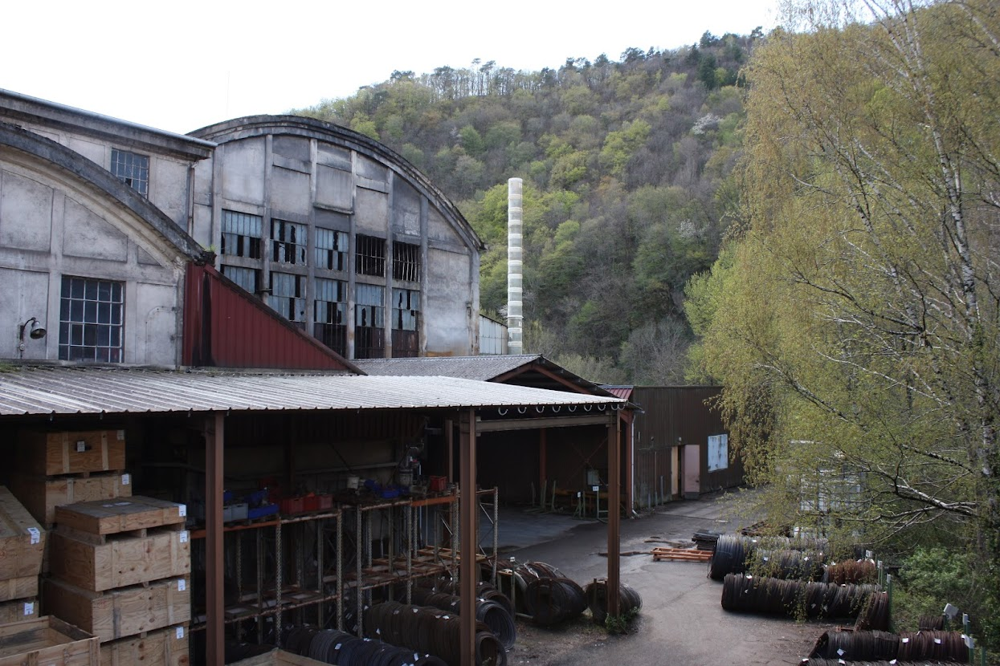
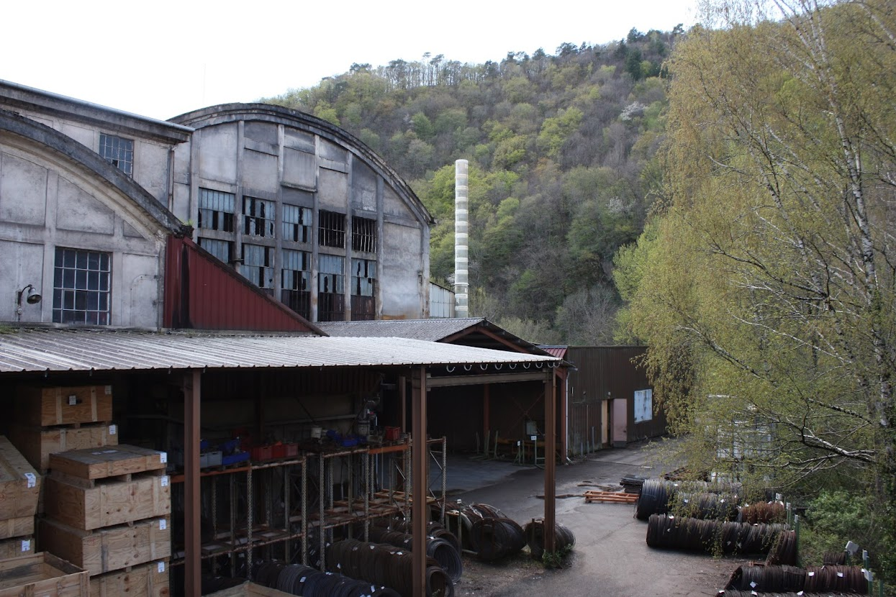

Algorithmique
Arbres décisionnels, Lowatem, Pong, Graphes, 6 nimmt!, RSA, Flitre de Bloom, Labyrinthe
Java, C#, Python
Algorithmique
Arbres décisionnels, Lowatem, Pong, Graphes, 6 nimmt!, RSA, Flitre de Bloom, Labyrinthe
Java, C#, Python
Filtre de Bloom
Projet
Réalisation d'un Filtre de Bloom
Résultat
Algorithmique du filtre, implementation avec différentes configurations pour chercher la meilleur optimisation à l'aide d'un Benchmark
GitHub du projetOutils
Java, graphique, Markdown, Logique
Compétences mise en place
Réalisation de documentation, génération de document CSV pour faire de l'analyse grâce à des graphiques

RSA
Projet en Groupe
Création d'un algorithme permettant de manière sécurisé d'échanger des informations entres deux personnes
Résultat
Algorithmique python fonctionnant sur le principe mathématique du RSA et création d'algorithmes de hachage

Outils
Python, Mathématique
Compétences mise en place
Etudes des systémes de crypthographies
Arbres décisionnels
Projet en Groupe
Effectuer une analyse statistique approfondie dans le domaine de la santé en utilisant des arbres de décision pour obtenir des résultats significatifs et exploitables
Résultat
Algorithme python d'entrainement d'arbres de décision, analyse de données et de création de graphiques
Rapport du projet
Outils
Python, bibliothèque SKLearn, Mathématiques
Compétences mise en place
Entrainement d'arbres de décision, création de jeux de test et d'entrainement, analyse de données et de graphiques

6 qui prend !
Projet en Groupe
Réaliser le jeu 6 qui prend !, avec une inteface graphique
Résultat
Jeu fait en C#, avec la possibilité aux joueurs de jouer à plusieurs sur un même ordinateur

Outils
C#, logique
Compétences mise en place
Création d'une application C#, d'éléments graphiques qui intéragissent avec la partie logique de l'application
Labyrinthe
Projet
Jeu de Labyrinthe
Résultat
Réalisation d'un jeu ou l'on peut déplacer un joueur et des monstres dans un labyrinthe

Outils
Java, Netbeans
Compétences mise en place
Réalisation d'une application Java avec interface graphique

Pong
Projet
Réalisation d’un jeu type pong et d’un document de conception à partir d’un code donné.
Résultat
Jeu Processing fonctionnel, avec un mode 4 joueurs, un mode 4 balles et un mode pause, aussi j'ai ajouté des obstacles et des vortexs qui permettent aux balles de se téléporter.
De plus j'ai créé un menu.

Outils
Java, Processing, mathématiques et logique.
Compétences mise en place
Création et modification d'éléments qui interagissent avec leur environnement et entre eux, puis création d’une interface graphique.

Lowatem
Projet
Création de niveau sur un jeu existant, puis réalisation d’une IA qui joue à ce jeu de stratégie pour affronter les autres IA des étudiants.
Résultat
Avoir codé 12 niveaux de ce jeu et créer une IA permettant de jouer le coup qui fait le plus de dégât sur l'adversaire.
Rapport IA Lowatem par Chaud Valentin et Genetet Maud
Outils
Logique, Java, Netbeans
Compétences mise en place
Faire preuve de patience, créer une IA, persévérer.

Exploration algorithmique d’un problème
Projet
Faire un algorithme qui trouve le chemin le plus court entre 2 sommets d'un graphe
Résultat
Pouvoir générer des graphes automatiquement, selectionner deux sommets et afficher le chemin le plus court le plus vite possible.
Outils
Logique, Java, Netbeans
Compétences mise en place
Utilisation de l'algorithme de Dijkstra et A*, utilisation de jBotSim, utilisation de graphes


Web
CafePierre, Snake, KingTong's, Babar
Javascript, Symfony, Tailwinds, Html, Css
Web
CafePierre, Snake, KingTong's, Babar
Javascript, Symfony, Tailwinds, Html, Css
Babar
Projet en Groupe
Application web permettant pour chaque utilisateur de suivre les series qu'il regarde ou d'en découvrir
Résultat
Application fonctionnant avec une base de donnée remplie grâce à l'API OMDB, affichage et ajout de données venant des utilisateurs, gestion des comptes utilisateurs


Outils
Symfony, Tailwinds, Twig, méthode scrum, UI/UX
Compétences mise en place
Oraganisation d'équipe selon la méthode scrum, création d'une application symfony complète


Système, Réseaux
Automatisation de page Web, Instalation de poste, Shell, DNS
C, Linux, VMWare, Bash
Système, Réseaux
Automatisation de page Web, Instalation de poste, Shell, DNS
C, Linux, VMWare, Bash
Minishell
Projet
Réaliser un terminal de commande
Résultat
Terninal de commande pouvant générer f)des processus fils ( fork ) et exécuter toute les commandes d'un terminal classique
Outils
C
Compétences mise en place
Apprentissage des Thread/Pipe/Fork et du C
DNS
Projet
Réseaux en DNS
Résultat
Réalisation d'un réseaux DNS et d'une documentation

Outils
Bash, Markdown, Virtual Machine
Compétences mise en place
Apprentissage des systèmes réseaux, TCP/IP, HTTPS, DNS
Automatisation de Page Web
Projet
Création d’un script qui génère automatiquement des pages web à partir d’un “storyboard”
Résultat
Script Bash fonctionnel et représentation du fonctionnement du script grâce au schéma ci-contre.


Outils
Bash, HTML5, CSS3
Compétences mise en place
Création d’un script Bash, et de fonction Bash pour intégrer des PDF et des bandes sonores.

Instalation de Poste
Projet
Installation complète d’une machine virtuelle Linux, avec installation de Vscode, Rust et un bureau XFCE et Git.
Résultat
Rapport du Projet fait par Genetet Maud et Menier Thomas

Outils
VMWare, rust, rust-analyzer, bash, git, Xubuntu, vscode
Compétences mise en place
Installation d’un système d’exploitation, étude des différents logiciels et de l’implémentation. Création d’une architecture logicielle, et installation des périphériques. Création des droits admin.


Base de données
Grave et Cie
SQL, WinDesign
Base de données
Grave et Cie
SQL, WinDesign
Grave et Cie
Projet
Proposer une solution d’organisation d’inventaire pour une entreprise fictive de négoce Bordelais.Résultat
Réalisation d’un Modèle Conceptuel des Données (MCD) et d’un script de création de base de données, élaboration de requêtes SQL, conception une maquette d’application avec ses fonctionnalités.
Outils
WinDesign, SQL Server Management Studio
Compétences mise en place
Créer et se servir d'une base de données, faire des commandes SQL.


.gif)
Artistiques
Disparition Urbaines, Visuel JPO 2022
Photographie, Gimp, Dessins, ...
Artistiques
Disparition Urbaines, Visuel JPO 2022
Photographie, Gimp, Dessins, ...
Disparition urbaines
Projet
Projet photo créé avec Pessac Animation suite à de l’urbex fait dans la Dordogne, pour documenter des lieux désaffectés.
Résultat
Exposition à la mairie de Pessac d'une dizaine de photographies en grand format pour le festival des Vibrations Urbaine et création d’un livre de 80 pages avec photos et textes de notre périple entre la Corrèze et le Cantal, auto-édité par la Mairie de Pessac
Outils
Photographie, Photoshop
Compétences mise en place
Création artistique et conception d’un projet en groupe.


 


Visuel JPO 2022
Projet
Réalisation des visuels de la Journée Porte Ouvertes 2022 de l’IUT de Bordeaux du département informatique pour la présentation du Bachelor Universitaire de Technologie Informatique.
Résultat
Création de l'affiche principale, du programme, du plan du site, des badges, de la signalisation et des flyers.
Ces réalisations ont été sélectionnées pour être les visuels de la JPO et aussi ont été par la suite reprises par les Licences professionnelles du même département.

Outils
Gimp, logiciel de création de QRCode.
Compétences mise en place
Utilisations de Gimp pour créer des designs propre à l’IUT comme des effets rétro gaming et les plans du département en rappelant la culture Informatique. Intégration de typologies spécifiques. Analyse des tendances graphiques et design 2022, création de QRCode.
 06 02 62 94 57
06 02 62 94 57 linkedin
linkedin